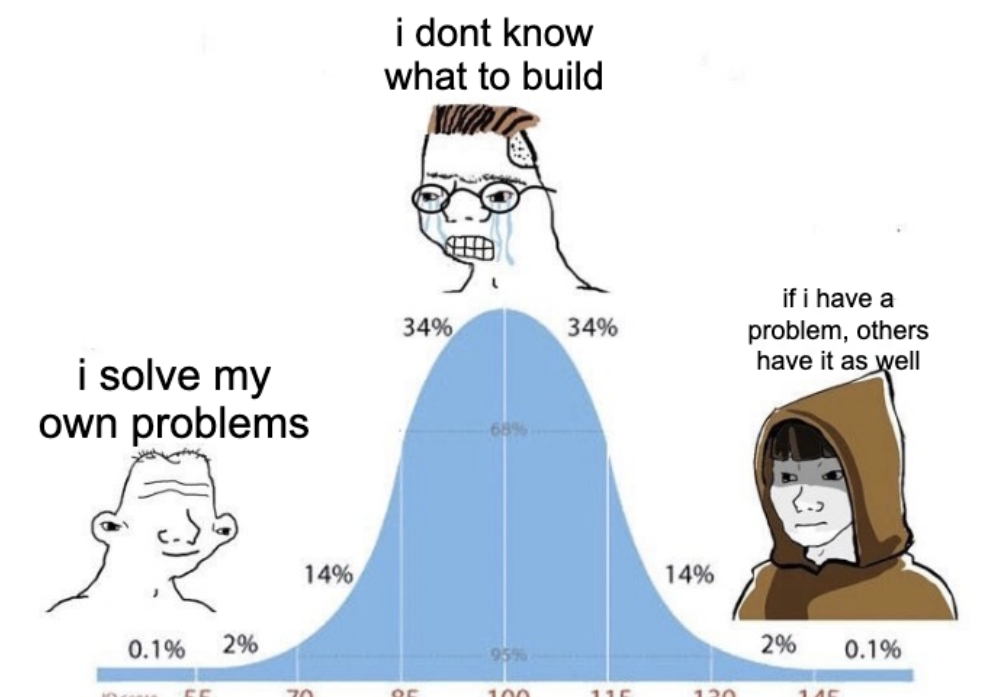
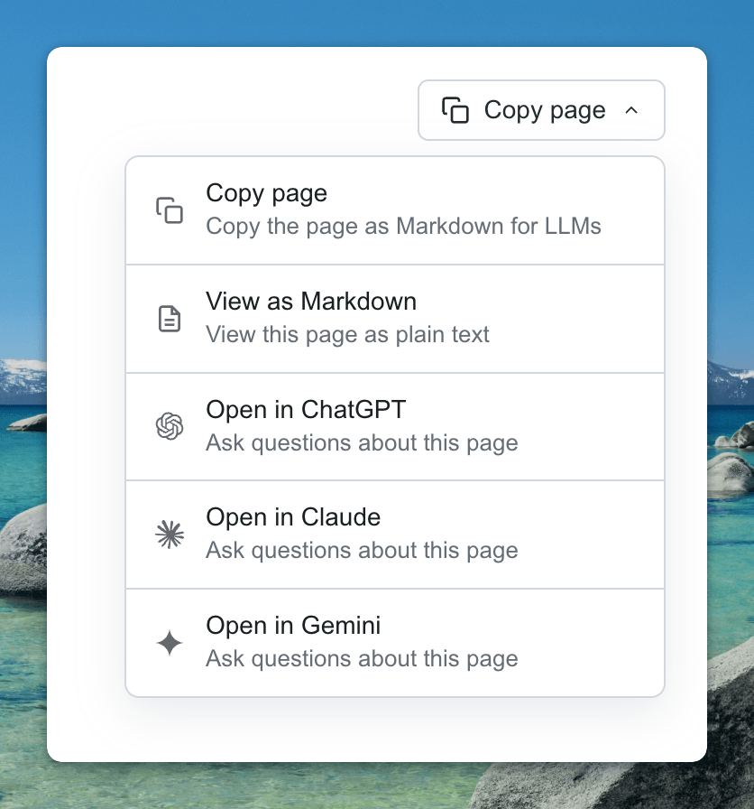
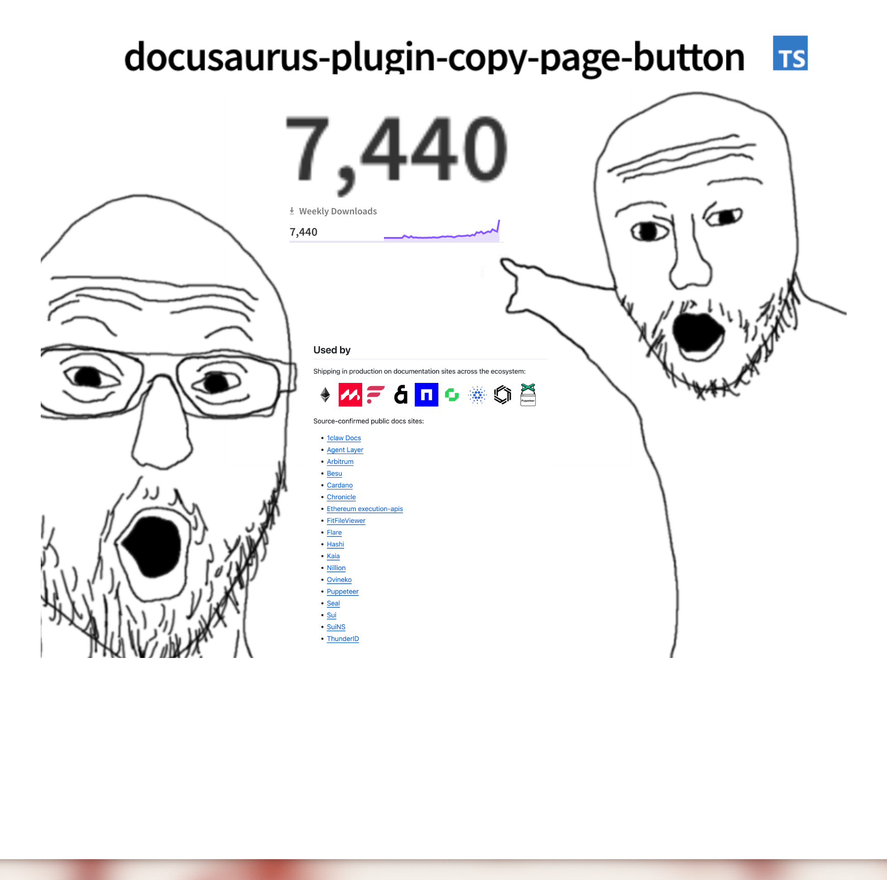

How to find ideas worth building

The hardest part of building anything is picking the right thing to build.
There is exactly one heuristic I trust:
If I have a problem with the tools I use every day, other people probably have it too. So I solve it, and then I publish it.
That is the whole bit. Here’s the most recent time it worked for me.
One day I saw that every company was adding a copy page button to their docs. I wanted to add one to Monad docs as well. So I built something with Claude, and then I thought, well why don’t I make this a plugin so that other people use it too? If this is a problem for me, it is a problem for other people as well, right?
I quickly published an initial version and I have been maintaining it for months now.
My little plugin is now used by over twenty docs sites, most notably:
- Puppeteer
- Ethereum execution-apis
- Cardano
- Arbitrum
- Sui
Enough boasting 😭. Now I will explain how I found this problem, how I solved it, and why this little side project actually went anywhere.
How I found the problem
Back when Monad docs ran on Docusaurus, I kept wanting to dump a doc page into Claude as context. Have you ever tried doing that natively?
Here is roughly what you actually paste into Claude when you select-all on a Docusaurus page:
Skip to main content
Docs
Reference Guides Standards About
GitHub X
Search
On this page
Move Basics
Variables and Types
Functions
References
Move Basics
Move is a statically typed language designed for the Sui blockchain.
This page covers the basic features of the language, including...
Edit this page
Last updated on May 15, 2026
Previous
Introduction
Next
Object Model
Was this page useful?Yeah. Half of that is sidebar text. The other half is footer chrome. The actual page content is the two sentences in the middle.
I worked around it manually for a while, doing the copy-paste-clean dance every time I needed context. After enough loops it hit me that I was spending more time on the workaround than on the actual question. The workaround had become the problem. Well you can choose not to clean it but then you spend a lot more tokens than needed.
That is the signal I trust now. When you find yourself doing the same workaround for the third time, you have found something worth building. Once you notice it, you can stop being a customer of the bug and start being the person who fixes it.
How I solved it
I asked Claude to write a custom button for the Monad site. The first version was maybe 200 lines and I shipped it the same afternoon.

It was great. The docs started using it, and anyone who landed a Monad docs PR with “I asked Claude” in the description had probably touched it.
The day after I shipped the custom button, I asked myself “is this only my problem?” Obviously not. Every Docusaurus site has the same copy-paste pain. The button I had built was Monad-specific, but the problem it solved was universal.
So I spent another afternoon cleaning it up, ripped out the Monad-specific bits, published it on npm as docusaurus-plugin-copy-page-button, and walked away.
The proof
Now, here’s the funny part.
A few months after I shipped the plugin, Monad docs migrated to Mintlify.
The thing I built for Monad docs no longer runs on Monad docs 😭.
But the plugin kept spreading anyway. The full list of adopters now includes Puppeteer, Ethereum execution-apis, Cardano, Arbitrum, Sui, Besu, Kaia, Flare, Walrus, Nillion, Chronicle, and a long tail of smaller sites. And right now there are open PRs at React Native, Jest, tRPC, Redux Toolkit, Uniswap, Cypress, pnpm, Ionic, Logto, Dagger, Ceramic, Oasis Protocol, SRS, StreamElements. Some might never get merged in but some might get in, I try my best! A few have already gotten the standard “we’d rather users read the source markdown” reply (s/o to the Babel reviewer for that one).

And people I have never met are filing real bug reports! @Simek’s review on the React Native PR turned into a four-bug bugfix release. Strangers DM me with feature ideas I would never have thought of (MCP install actions came from a stranger). The plugin has a contributor base now.
You don’t get to pick which of your side projects takes off. The “real” thing I was working on was Monad docs content. The plugin was scaffolding. The scaffolding outlived its host.
Open source must win
s/o @0xSero for the line that has been living in my head rent-free:
Open source must win.
Honestly that is the whole point of writing this article. You have problems with the tools you use every day, and so does everyone else. But it only gets fixed if you ship something. And once you do, the multiplier is wild. Your two-day side project ends up running on docs sites you have never visited, helping people you will never meet.
So next time you find yourself doing the same workaround for the third time, just build the thing and publish it. An afternoon of your time might save everyone else a lot of afternoons.
The plugin is at github.com/portdeveloper/docusaurus-plugin-copy-page-button. Recent additions are all from what people asked for: Perplexity (was annoying that ChatGPT and Claude had buttons and Perplexity didn’t), MCP install links for Cursor and VS Code (one-click install for docs sites that ship an MCP server), and .md URL routes so you can hand your-docs.com/page.md straight to any LLM that can fetch URLs.
If your Docusaurus site doesn’t have it, it’s a one-line install.
Related: Simple just works: how i built puddleswap - the same “solve your own problem” heuristic on a different project.
Questions?